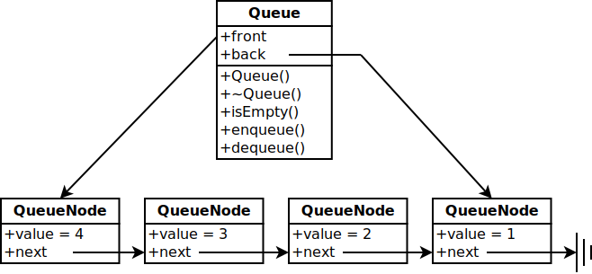

Summary of Lists
graph TD subgraph abstract data type A[Lists] end subgraph implementations B[Array] C[Vector] D[Linked List] end A --> B A --> C A --> D subgraph restricted lists E[Stack] F[Queue] end C -->E D --> E C --> F D --> F
Stack Applications: Symbol Balancing
{ ( [ ] ) }
{ [ ( } ) ]
Stack Applications: Postfix Calculator
6 5 2 3 + 8 * + 3 + *
Stack: Linked List Implementation Diagram
Queue: Linked List Implementation Diagram

Your browser does not support the canvas tag
Click the center of the target
Close window